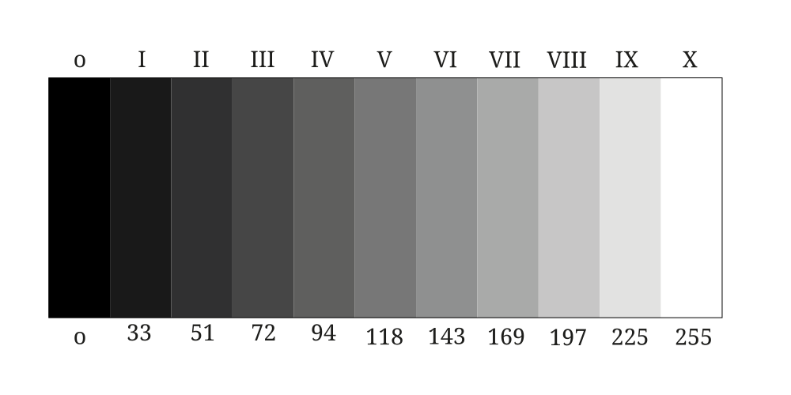

Ansel Adams’s iconic black-and-white photographs transformed the American wilderness into heroic, pristine monuments. Using his famous "Zone System," he masterfully manipulated exposure and contrast to capture dramatic lighting, deep shadows, and luminous highlights. His legendary images of Yosemite and the American West turned rugged landscapes into timeless, breathtaking works of art.
Ansel Adam - landscape master
Ansel Easton Adams (February 20, 1902 – April 22, 1984) was an American landscape photographer and environmentalist known for his black-and-white images of the American West. He helped found Group f/64, an association of photographers advocating "pure" photography which favored sharp focus and the use of the full tonal range of a photograph. He and Fred Archer developed a system of image-making called the Zone System, a method of achieving a desired final print through a technical understanding of how the tonal range of an image is the result of choices made in exposure, negative development, and printing. LEARN MORE
What is the Zone System?
The Zone System is a method of controlling exposure and tonal contrast developed by Ansel Adams and Fred Archer around 1941. It was designed primarily for black-and-white photography and darkroom work, but its principles remain highly influential even in digital photography today.
The main goal of the Zone System was to allow photographers to predict exactly how tones in a scene would appear in the final image before taking the photograph.

Previsualization
One of Ansel Adams’s most important contributions to photography was the concept of previsualization. According to Adams, a photographer should not simply record what is in front of the camera; instead, they should mentally envision the final photograph before pressing the shutter. This means anticipating the image’s tonal range, contrast, mood, and visual impact in advance.
Previsualization was closely connected to the Zone System. Adams believed that photographers should consciously decide how different elements of a scene would appear in the final print. Rather than relying on chance, exposure and development were carefully planned to achieve a predetermined artistic result. The photograph was therefore created first in the photographer’s imagination and only then on film.
The concept remains highly relevant today. Although digital photographers no longer work with negatives and darkrooms in the same way, previsualization continues to guide decisions about exposure, composition, editing, and post-processing. Modern photographers often use histograms, RAW files, and editing software to achieve the same goal that Adams pursued: transforming a visual idea into a finished image.
Ansel Adams: Photography as a Voice for Nature
Ansel Adams was not only a master of landscape photography; he also changed the way people understood the natural world. His powerful black-and-white images of Yosemite, the Sierra Nevada, and other wild places showed nature as something majestic, fragile, and worth protecting.
Through his photography, Adams turned landscapes into emotional experiences. Mountains, forests, rivers, and clouds were not just background scenery in his work. They became symbols of beauty, freedom, silence, and wilderness. His photographs invited viewers to slow down, look carefully, and feel a deeper connection with the environment.
Adams also gave photography a political purpose. His images helped support the conservation movement in the United States by showing the public why wild places mattered. At a time when many natural areas were under pressure from development, his photographs became visual arguments for protection. They helped people understand that national parks were not only useful spaces, but also cultural and spiritual treasures.
Today, his influence can still be seen in environmental photography, travel photography, and landscape art. Many photographers continue to use images to raise awareness about climate change, deforestation, pollution, and the loss of natural habitats. In this way, Adams helped create the idea that photography can do more than capture beauty — it can inspire responsibility.
His legacy reminds us that a photograph can be both artistic and meaningful. It can show what the world looks like, but also what the world needs from us. For today’s photographers, Ansel Adams remains an example of how visual art can protect nature by making people care about it.
Photographers Inspired by Ansel Adams: Continuing the Language of Light
Ansel Adams’ influence did not end with his own photographs. Many photographers after him have openly followed, studied, or developed ideas connected to his work. Some were his assistants, some learned from his prints and books, and others were inspired by the way he used photography to protect nature.

John Sexton: Learning Directly from the Master
John Sexton is one of the clearest examples of a photographer shaped by Ansel Adams. He attended one of Adams’ Yosemite workshops and later worked as Adams’ technical and photographic assistant, as well as his technical consultant. His career grew from the same world of large-format cameras, black-and-white landscapes, and carefully crafted prints.
Clyde Butcher: The Ansel Adams of the Everglades
Clyde Butcher is often connected to Ansel Adams because of his dramatic black-and-white landscape photographs. Butcher has openly said that Ansel Adams inspired him, especially Adams’ ability to use photography to make people care about the environment. He admired Adams’ full range of tones, from deep black to bright white, and his ability to turn nature into an emotional experience.

Alan Ross: Preserving Adams’ Technique and Spirit
Alan Ross also has a direct connection to Ansel Adams. He worked side by side with Adams in the field and in the darkroom as his full-time photographic assistant. He was also personally selected by Adams to print the Yosemite Special Edition negatives, which shows how deeply Adams trusted his understanding of photographic technique.
William Neill: Inspired by Yosemite and the Adams Tradition
William Neill is another photographer connected to Adams’ legacy. He worked at The Ansel Adams Gallery in Yosemite, where he was introduced to Adams’ work and other fine-art photographers. Yosemite itself became a lasting source of inspiration for Neill’s photography. Neill’s images are often more colorful and intimate than Adams’ famous black-and-white views, but the influence is still visible.